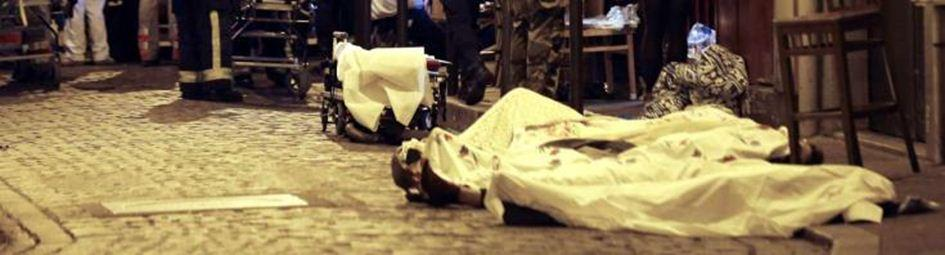

Nos deux pays la France et la Russie subissent dans leur chair les conséquences d’actes terroristes d’une violence sans limite qui frappent de préférence les populations civiles. Condamner ces actes parait une évidence. Vouloir s’organiser et coordonner nos forces pour combattre les groupes terroristes est une nécessité que personne ne conteste.
Il est pourtant un aspect qui n’est que très rarement abordé dans les médias et chez les analystes occidentaux, qui est celui de l’origine du terrorisme. Il s’agit non seulement de l’origine immédiate, comme par exemple la déstabilisation de la Syrie ou de la Lybie, mais aussi de l’origine philosophique qui fait que certaines puissances occidentales acceptent délibérément de laisser faire, voire d’instrumentaliser et de soutenir les groupes terroristes les plus radicaux pour accomplir leurs objectifs géopolitiques.
Pour comprendre le terrorisme et ceux qui l’emploient il faut remonter à l’origine de cette civilisation moderne qui considère que la terreur est un moyen légitime pour obtenir un changement, soit de type totalitaire, c’est-à-dire influer sur la vie et les conceptions d’une population, soit de type politique, c’est-à-dire influer sur la politique d’un Etat, jusqu’à obtenir le remplacement du gouvernement de cet Etat.
Nous tâcherons donc dans un premier temps de définir les fondements du terrorisme, puis nous définirons les utilisateurs contemporains du terrorisme et enfin nous tenterons d’entrevoir une manière de lutter contre le terrorisme, non pas dans le cadre d’une coopération technique, mais dans celui de la restauration de nos valeurs européennes chrétiennes.
I Qu’est-ce que le terrorisme ?
Revenons à l’étymologie du terme « terroriste ». Il s’agit pour un acteur politique d’obtenir de ce qu’il souhaite par la terreur. On pourrait bien entendu revenir loin dans l’Histoire de l’humanité et considérer par exemple les armées mongoles comme des armées terroristes, elles qui menaçaient les villes assiégées de destruction totale si elles ne se rendaient pas. Pourtant il manque à cet exemple un aspect idéologique qui est omniprésent dans le terrorisme moderne. Car le terrorisme est un fruit de la modernité et de la crise de conscience européenne issue de la philosophie des lumières.
D’une civilisation qui considérait que tous les hommes étaient issus d’un même père et d’une même mère, que l’on devait aimer son prochain et pardonner à ses ennemis, l’Europe a basculer dans un modèle de civilisation totalement différent. La négation de la transcendance divine des êtres humains a cessé de les rendre égaux devant Dieu, puis les hommes ont cessé d’être égaux entre eux.
Saint-JustCette négation de l’humanité d’une partie d’une population par une autre a donné naissance au premier terrorisme de l’histoire qui est celui de la révolution française. De la fin de l’année 1792 au milieu de l’année 1794, s’étend ainsi la plus épouvantable des périodes de l’Histoire de France connue sous le nom de la « Terreur ». Ses acteurs seront appelés les terroristes dont les plus connus restent Robespierre et Louis Antoine de Saint-Just, surnommé « l’archange de la terreur ». Le slogan de Saint-Just qui résume bien cette période est sans doute « pas de liberté pour les ennemis de la liberté ». Prétextant la guerre, prétextant la chasse aux forces antirévolutionnaires, la révolution française a ouvert une époque de violence et de sauvagerie dans toute l’Europe.
Son fonctionnement a inspiré toutes les dictatures et tous les totalitarismes du XXème siècle. La révolution française est l’arrivée au pouvoir d’une élite non élue, auto-investie d’une mission sacrée qui consiste à faire le bonheur du peuple français, malgré lui et même contre lui. Ce système totalitaire qui fonctionne par la peur, par la dénonciation, par ce que Soljenitsyne a appelé la haine de tous contre tous enfantera la révolution bolchévique. Tout le XIXème siècle en Russie est secoué par le terrorisme. Lénine réclamera des « Vendée », faisant allusion à l’extermination de ces populations catholiques de l’ouest de la France. Les bolchéviques massacreront ainsi dans leur campagnes de terreur, les Russes et les prêtres orthodoxes, comme les révolutionnaires français un siècle plus tôt.
La révolution française n’a pas inspiré que la révolution bolchévique mais tous les totalitarismes du XXème siècle, ce qu’a d’ailleurs souligné avec justesse l’ancien Président tchèque, Vaclav Klaus. Au nom du fait que la loi révolutionnaire justifie tout ce qui permet l’accomplissement de la révolution, le terrorisme est devenu l’instrument privilégié des idéologies modernes jusqu’à nos jours. Il peut être le fait d’un groupe organisé, mais il peut aussi être le fait d’un Etat. Si le terrorisme est un instrument, alors qui l’a fabriqué et qui l’utilise ?
II Qui utilise le terrorisme ?
En 1998 Zgibnew Brezinski a donné une interview au magazine français « Le Nouvel Observateur ». Dans ce magazine il se vantait de la présence des services secrets américains en Afghanistan six mois avant l’intervention soviétique. Les alliés des services secrets américains s’appelaient Oussama Ben Laden et Gulbuddin Hekmatyar. Le 8 août 2008, 10 soldats français trouvent la mort en Afghanistan lors de l’embuscade de Surobi, tendue par les troupes d’Hekmatyar.
Durant les guerres de Yougoslavie, la France a soutenu les islamistes bosniaques, fermant les yeux sur les volontaires français qui partaient combattre avec eux. En 1996, ces islamistes de retour en France et au nom du Jihad ont commencé à attaquer les banques. Ils ne sont mis hors d’état de nuire qu’après un assaut qui est une véritable scène de guérilla urbaine.
Miliciens du Bataillon TornadoNous aurions pu espérer que les gouvernements américains et français qui se sont succédés depuis ces guerres eussent tiré les leçons de ces engagements inconsidérés, pourtant tel ne fut pas le cas. A partir de 2011 les gouvernements occidentaux ont délibérément déstabilisé les gouvernements de la Lybie puis de la Syrie et de l’Ukraine. Pour ce faire, ils ont soutenu des mouvements radicaux qui sont pourtant interdis dans leur propre pays. Néonazis en Ukraine, islamistes en Lybie et en Syrie ont été instrumentalisés. La première conséquence a été de livrer les populations civiles de ces pays à la merci de ces groupes de sauvages. Les exactions du bataillon de représailles ukrainien Tornado n’ont rien à envier à celles des islamistes de l’EI ou du Front al Nosra.
C’est sur ces populations civiles innocentes que s’abat le terrorisme islamique ou néonazi. La deuxième conséquence est de permettre à ces groupuscules de fanatiques de s’organiser, de s’armer et de devenir des centres de formation et de recrutement pour le monde entier.
La troisième conséquence est que ces cellules structurées de terrorisme ont désormais la possibilité de rayonner bien au-delà de leur zone initiale de combat, comme dans le centre de Paris en novembre dernier.
Laurent FabiusLe 28 janvier 2013, le ministre des Affaires Etrangères Laurent Fabius a déclaré que le Front al Nosra « faisait du bon boulot ». Le 26 février 2014, le même ministre déclare que le parti néonazi Svoboda s’est « recentré » alors que ce dernier se réfère ouvertement à Adolf Hitler. La diplomatie française a instrumentalisé des mouvements terroristes pour parvenir à des objectifs qui ne correspondent même pas à l’intérêt de notre Nation. Cette politique absurde, mélange de cynisme et d’amateurisme, nous l’avons payé le prix du sang. Ce n’était pas le sang de Laurent Fabius bien entendu, mais celui de citoyens français innocents, aussi innocents que les citoyens syriens ou que les habitants du Donbass.
C’est pour cette raison qu’avant de s’interroger sur la manière de combattre le terrorisme, il est important de s’interroger sur la manière d’éviter de lui donner naissance.
III Comment lutter contre le terrorisme ?
Pour traiter le problème sur le fond, les nations européennes doivent renoncer à soutenir les groupuscules radicaux pour accomplir leurs objectifs. Cela peut être considéré sous certains aspects comme un véritable changement de civilisation ou plutôt un retour à ce qui faisait la grandeur de la grande civilisation chrétienne européenne. Les valeurs occidentales sont en fait fondées sur le précepte du terroriste révolutionnaire Saint-Just, « Pas de liberté pour les ennemis de la liberté ». Les lumières, la révolution française, le darwinisme et l’exceptionnalité américaine ont abouti à une civilisation où ceux qui périssent n’ont en fin de compte que subi la loi de la sélection naturelle. Cette anti-civilisation pense que la fin justifie les moyens et que cette fin doit être définie par une élite autoproclamée sans aucune légitimité démocratique.
Le Grand Prêtre Caïphe croyait aussi qu’il valait mieux qu’un homme meure, fut-il innocent, plutôt que tout le peuple. L’occident pense que les départs de Bachar El Assad et de Viktor Ianoukovitch valent un soutien aux terroristes islamistes ou nazis et peu importe que des innocents meurent. C’est en cela qu’existe effectivement ce choc de civilisation cher aux idéologues atlantistes. Mais contrairement à ce qu’ils affirment, ce choc n’est pas géographique mais historique, profondément marqué par les révolutions américaine et française. La civilisation qui est issu de ces chocs historiques inaugure un nouveau monde, celui des fanatismes idéologiques qui aboutiront aux nationalismes allemand ou ukrainien, à l’anarchisme, au bolchévisme et aujourd’hui au mondialisme comme idéologie. Tous ces fanatismes sont à la fois les enfants de la terreur et leur principal utilisateur.
Jamais l’islamisme n’a pu, ne peut ou ne pourra par lui-même avoir les moyens de son fanatisme. Livrer à lui-même, il ne peut rien ni économiquement, ni militairement, ni politiquement. L’EI et le Front al-Nosra sans l’aide de la Turquie et de l’Occident ne seraient encore que des groupuscules insignifiants. Svoboda ou Pravy Sektor, sans l’aide de l’occident n’auraient jamais pu avoir un ministre ou une influence quelconque sur la vie des peuples d’Ukraine.

Attentats de Paris, 13 novembre 2015
Ainsi, la première étape de la lutte contre le terrorisme passe par le retour aux valeurs fondamentales de notre civilisation chrétienne. Une civilisation où la fin ne justifie pas les moyens, où l’on pardonne à ses ennemis, où la parole d’un chef d’Etat ou d’un diplomate a de la valeur, où la violence reste l’ « Ultima Ratio » et non pas le moyen privilégié et où on ne dine pas avec le diable même avec une grande cuillère.
Partager cette page